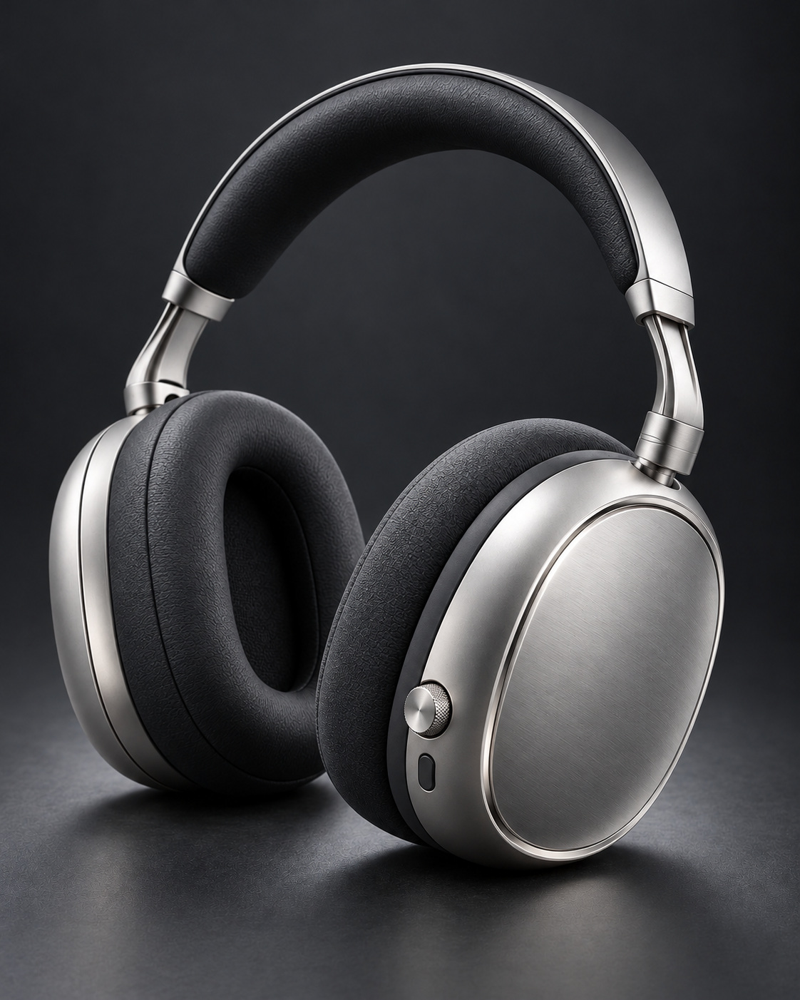
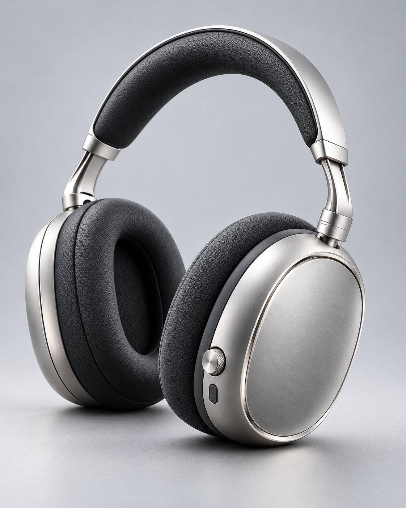
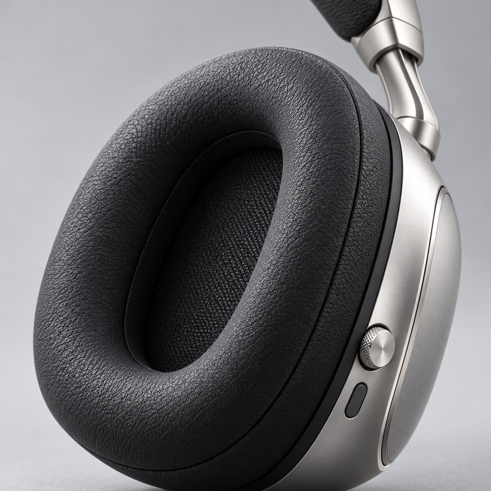
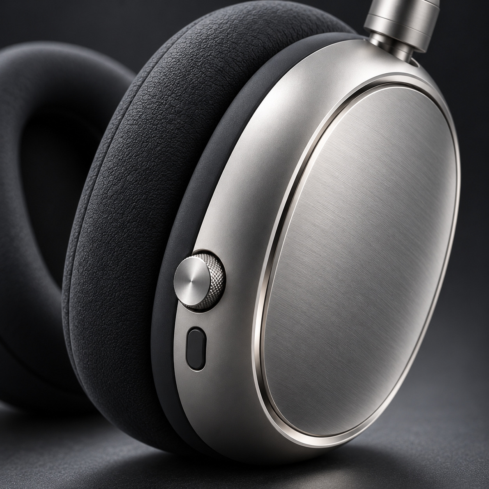
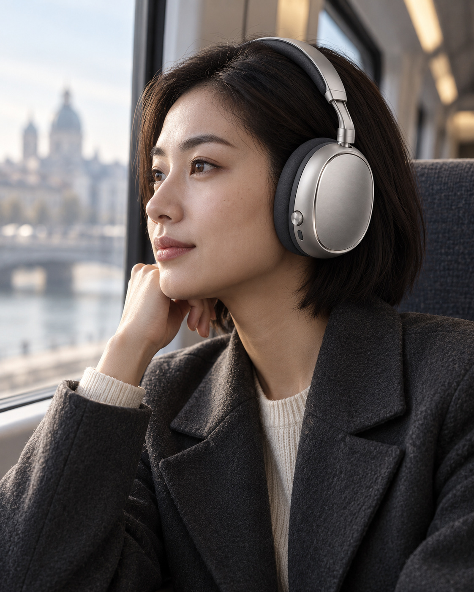
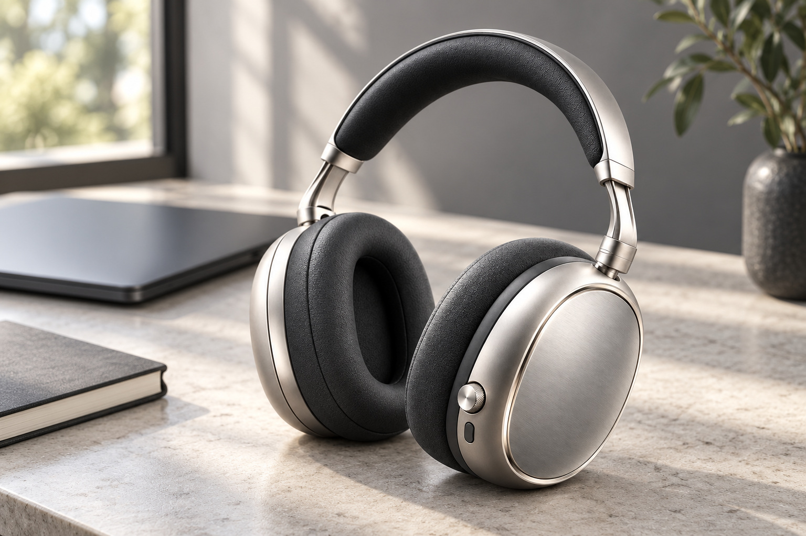
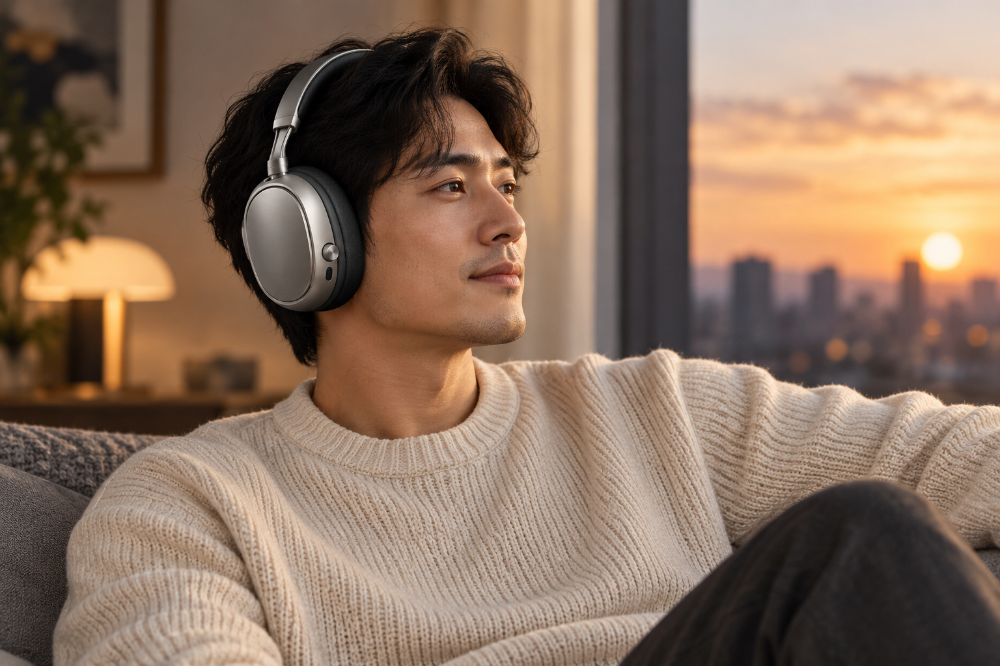

단정한 실버의 선
잔잔한 결을 살린 실버 면과 빛을 얇게 잡아내는 테두리. 과한 장식 없이도 옷차림에 또렷한 포인트를 남깁니다.
무선 오버이어 헤드폰
선명한 실버 톤, 차분한 차콜.
귀를 감싸는 형태부터 손끝에 닿는 디테일까지,
매일의 나와 어울리는 헤드폰을 그렸습니다.

음악은 하루의 여러 장면에 있으니까
재생목록은 달라도,
손이 가는 헤드폰의 기준은 분명하게.
헤드폰은 책상 위에만 머무르지 않습니다. 옷차림과 나란히 놓이고, 머리선에 맞춰 쓰고, 손끝으로 조작하는 물건입니다. 듣는 순간뿐 아니라 쓰고 만나는 순간까지 자연스러운 디자인을 생각했습니다.
자주 쓰는 물건일수록, 작은 차이부터
잔잔한 결을 살린 실버 면과 빛을 얇게 잡아내는 테두리. 과한 장식 없이도 옷차림에 또렷한 포인트를 남깁니다.
귀 주변을 둘러싸는 타원형 패드와 머리선을 따라 흐르는 밴드. 나에게 맞는 착용 위치를 살펴볼 수 있도록 구조를 드러냈습니다.
잔잔한 요철이 있는 다이얼, 낮게 놓인 버튼. 눈으로 보고 손으로 찾는 부분을 서로 다른 형태로 구분했습니다.

디테일 01 / 형태와 표면
넓은 이어컵에는 잔잔한 브러시드 결을, 가장자리에는 얇은 입체 테두리를 더했습니다. 빛이 머무는 면과 짙은 차콜 패드가 대비를 이루어, 차분한 옷차림에도 제품의 윤곽이 또렷하게 남습니다.
반짝임을 더하기보다,
오래 보아도 단정한 윤곽.
디테일 02 / 이어패드
안쪽 공간이 보이는 타원형 패드가 귀 주변을 둘러싸는 형태를 만듭니다. 볼륨 있는 곡면과 잔잔한 표면의 결로, 단단한 외피와 맞닿는 부분에도 부드러운 인상을 더했습니다.

귀 주변을 둘러싸는 오버이어 형태를 가까이 살펴보세요.
패드와 외피가 만나는 선까지 하나의 인상으로 정돈했습니다.
패드의 실제 소재와 착용감은 확정되지 않은 콘셉트 샘플입니다. 장시간 착용 편의나 압박 감소 효과를 보장하지 않습니다.
디테일 03 / 헤드밴드와 조절부
조절되는 부분이 어디인지 알기 쉬운 구조.
착용할 때 확인할 세 가지를 간결하게 정리했습니다.
패딩이 있는 밴드가 머리 위에 자연스럽게 놓이는지 확인하세요.
측면 슬라이더를 활용해 좌우 이어컵의 위치를 맞추는 콘셉트입니다.
귀가 안쪽 공간에 놓이는지, 한쪽으로 치우치지 않는지 살펴보세요.
실제 조절 범위와 착용감은 제품 사양·머리 크기·안경 착용 등에 따라 달라질 수 있습니다.
디테일 04 / 다이얼과 버튼
작은 다이얼에는 촘촘한 결을, 별도의 버튼에는 차콜 색을 더했습니다. 같은 실버 면 위에서도 만지는 부분의 경계가 드러나도록. 눈길을 오래 붙잡는 장식 대신, 손이 향할 위치를 정돈했습니다.
조작부 외형을 표현한 디자인 콘셉트입니다. 버튼별 실제 기능과 전자 사양은 확정되지 않았습니다.

하루의 장면에 놓아보기
이동하는 아침, 책상 앞의 오후, 집에서의 저녁.
장면을 눌러 일상 속 분위기를 살펴보세요.

차콜 재킷 옆으로 드러나는 실버의 곡선. 옷차림을 복잡하게 만들지 않으면서, 작은 소지품 하나에도 취향을 남깁니다.

다 쓰고 내려놓은 순간에도 공간의 인상을 흐트러뜨리지 않도록. 밝은 책상과 어두운 소지품 사이에서 실버와 차콜이 차분한 균형을 만듭니다.

외출할 때의 단정함을 집 안에서도 자연스럽게. 부드러운 니트와 차분한 실버가 만나, 일상의 마지막 장면에도 같은 취향으로 이어집니다.
착용·사용 장면은 연출 사진입니다. 장면 선택은 이미지 비교 기능이며 음질·차음·노이즈 캔슬링을 시연하지 않습니다.
이런 기준으로 고른다면
크고 화려한 로고보다 색과 선의 조화를 먼저 본다면, 실버와 차콜의 절제된 대비를 살펴보세요.
귀 위에 얹는 모양과 귀 주변을 감싸는 모양 중, 자신이 편하게 느끼는 구조를 먼저 떠올려 보세요.
평평한 면 하나보다 돌리는 부분과 누르는 부분의 모양이 구분되는 디자인을 선호한다면.
내게 맞는 헤드폰을 고르는 기준
이어패드 안쪽 크기와 밴드 길이가 자신에게 맞는지, 실제 제품을 착용해 확인하는 것이 좋습니다.
휴대전화나 컴퓨터의 연결 방식, 필요한 전환 기능이 지원되는지는 실제 제품 사양에서 확인하세요.
배터리 시간, 충전 방식, 통화와 소음 제어 기능은 생활 패턴에 맞춰 따로 비교해 보세요.
이 페이지에는 검증되지 않은 음향·배터리·연결 성능표를 제시하지 않습니다. 실제 제품을 선택할 때 확인할 기준을 안내합니다.
사용 뒤에도 간결하게
헤드밴드와 이어패드에 강한 압력이 가해지지 않도록 자리를 정해주세요.
직사광선과 열, 습기가 많은 곳은 피하고 실제 제품의 보관 안내를 따라주세요.
세정제나 물을 사용하기 전에는 실제 소재와 제조사의 관리 방법을 확인하세요.
선택 전 궁금한 이야기
실제 판매 상품이 아닌 MOTIF의 자체 제작 포트폴리오 샘플입니다. 제품과 착용 사진, 문구와 구성은 상세페이지 제작 역량을 보여주기 위한 콘셉트입니다.
해당 성능은 확정하거나 시험하지 않았습니다. 제품의 외형과 사용 장면을 표현한 샘플이며, 사진이나 그래픽은 음향 성능과 차음 효과를 보장하지 않습니다.
서로 다른 형태의 조작부를 보여주는 디자인 콘셉트입니다. 재생·음량·통화 등의 실제 기능 배정과 전자 사양은 확정하지 않았습니다.
배터리·충전 시간, 연결 버전과 코덱 등은 이 샘플의 확정 정보가 아닙니다. 실제 제품을 고를 때는 제조사가 제공하는 사양과 사용 기기의 호환성을 함께 확인해주세요.
사진에서는 타원형 패드와 표면의 질감을 표현했습니다. 실제 소재·무게·조절 범위는 확정되지 않았으며, 착용감은 머리 크기와 안경 착용 등 개인 조건에 따라 다를 수 있습니다.
포트폴리오 샘플 안내
MOTIF 자체 제작 샘플입니다. 실제 고객 납품 사례나 시험·인증 자료로 사용되지 않습니다.